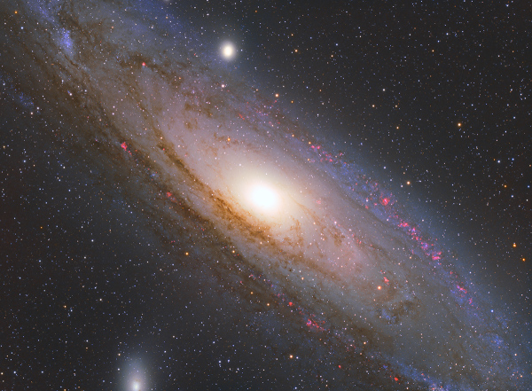

Pháo hoa trong ốc đảo vũ trụ
Sở hữu góc nhìn rất “khủng” trên bầu trời, thiên hà Tiên Nữ (hay Andromeda, mã hiệu M31) luôn là đích ngắm hàng đầu cho giới chơi ảnh thiên văn nghiệp dư ở bán cầu Bắc. Thiên thể này rất sáng, có thể nhìn thấy bằng mắt thường ở những khu vực thưa dân cư, vốn ít bị ảnh hưởng bởi ô nhiễm ánh sáng. Một ống kính tiêu cự khoảng 200mm thậm chí dễ dàng phân giải khu vực nhân trung tâm và một phần đĩa sáng nhạt màu của thiên hà này với thời gian phơi sáng chỉ 30 giây. Cùng sự hỗ trợ của kính thiên văn tiêu chuẩn và các thiết bị thu hình phức tạp, chúng ta còn có thể tiến xa hơn thế, vươn tới vùng không gian sâu thẳm để chiêm ngưỡng vẻ đẹp tráng lệ của thiên hà Andromeda, giống như đang ngắm nhìn một “ốc đảo vũ trụ” chứa đầy sao và bụi khí.

Thiên hà Tiên Nữ là thiên hà xoắn ốc gần chúng ta nhất với khoảng cách ước chừng 2,5 triệu năm ánh sáng. Trong hơn 54 thiên hà gần nhau thuộc nhóm Địa Phương, đây là thiên hà có khối lượng lớn nhất. Các khảo sát chuyên sâu cho thấy, Andromeda chứa lượng sao gấp từ 3 tới 4 lần dải Ngân Hà của chúng ta. Đường kính tại hai điểm rộng nhất trên Andromeda vào cỡ 142 ngàn năm ánh sáng, lớn hơn bất kỳ thiên hà nào trong phạm vi 10 triệu năm ánh sáng ở xung quanh nó. Thậm chí, quầng khí bụi của Andromeda còn mở rộng ra đường kính lên tới 2 triệu năm ánh sáng và chứa rất nhiều nguyên tố nặng hơn helium, chứng tỏ nguồn gốc của chúng đến từ những vụ nổ siêu tân tinh trong nội bộ đĩa thiên hà.
Phần nhân thiên hà Tiên Nữ có lẽ chứa một hố đen siêu khổng lồ với khối lượng gấp 50-100 triệu lần Mặt Trời, thậm chí còn cao hơn nữa theo những ước tính mới của NASA. Quan sát của KTV vũ trụ Hubble cho thấy hạt nhân trung tâm vốn là hai thành phần quay lồng vào nhau trên quỹ đạo lệch tâm và hiện đang cách nhau chừng 4,9 năm ánh sáng. Phần sáng hơn là một đĩa đậm đặc chứa hàng loạt sao già và lạnh. Trong khi đó, vật thể còn lại dù có kích thước nhỏ hơn nhiều nhưng lại chứa một cụm sao khổng lồ màu xanh lam rất trẻ và cực kỳ sáng do có quá nhiều sao bị “nén” trong khu vực kích thước chỉ một năm ánh sáng. Tốc độ chuyển động của những ngôi sao này quanh hố đen đạt tới 1000 km mỗi giây, đủ để hoàn thành một vòng quỹ đạo chỉ trong 100 năm. Theo các nhà khoa học, có thể kết quả của cuộc va chạm giữa Andromeda và một thiên hà nhỏ hơn cách đây khoảng 100 triệu năm là nguyên nhân dẫn đến sự hiện diện của đĩa khí quay ngược chiều và cụm sao tương đối trẻ tại vùng nhân.
Vùng đĩa phía ngoài thiên hà Tiên Nữ chứa nhiều quầng bụi khí dày và các vùng hình thành sao khổng lồ có màu đỏ hồng. Phần đĩa phía trong nhìn chung là yên tĩnh với nhiều sao già màu vàng, độ tuổi trung bình trên dưới 7 tỉ năm tuổi. Quá trình hình thành sao hầu như chỉ diễn ra trong những nhánh xoắn ốc dày và lạnh ở khoảng cách 25-40 ngàn năm ánh sáng tính từ trung tâm. Đi vào sâu hơn nữa, phần nhân thiên hà có lẽ chứa một hố đen siêu khổng lồ với khối lượng gấp 50-100 triệu lần Mặt Trời, thậm chí còn cao hơn nữa theo những ước tính mới của giới khoa học.

Thiên hà Tiên Nữ là thiên hà xoắn ốc gần chúng ta nhất với khoảng cách ước chừng 2,5 triệu năm ánh sáng. Trong hơn 54 thiên hà tương tác nhau thuộc nhóm Địa Phương, đây là thiên hà có khối lượng lớn nhất. Thiên hà này cũng có thể nhìn được bằng mắt thường ở những nơi có ít ô nhiễm ánh sáng do góc nhìn rất lớn trên bầu trời mùa thu.